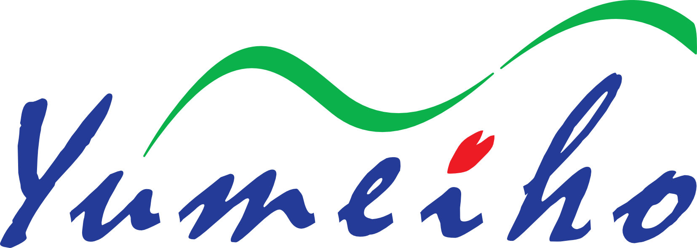

01 / Kuvvet
Bu modelde kuvvet, kütle ile yerçekimi ivmesinin çarpımıdır: F = m × 9,81.

LABORATUVAR / YÜK VE DENGE
İki yükü ve merkezden uzaklıklarını değiştirin. Kuvvetin büyüklüğü kadar, uygulandığı mesafenin de dengeyi nasıl etkilediğini inceleyin.
Bu, sabit bir destek etrafındaki basitleştirilmiş mekanik deneydir. İnsan omurgası veya skolyoz simülasyonu değildir; kişisel bir değerlendirme üretmez.
Deneye geç ↓Yükler eşit. Net moment sıfır.
Çizim ölçekseldir; yükleri aşağıdaki kontrollerle değiştirin.
DENEYİN ANLATTIĞI
Bu modelde kuvvet, kütle ile yerçekimi ivmesinin çarpımıdır: F = m × 9,81.
Desteğe göre döndürme etkisi, kuvvet ile dik uzaklığın çarpımıdır: M = F × d.
İnsan bedeni kaslar, eklemler ve aktif kontrol ile çok daha karmaşık bir sistemdir. Bu deneyden duruş, tanı veya tedavi sonucu çıkarılamaz.